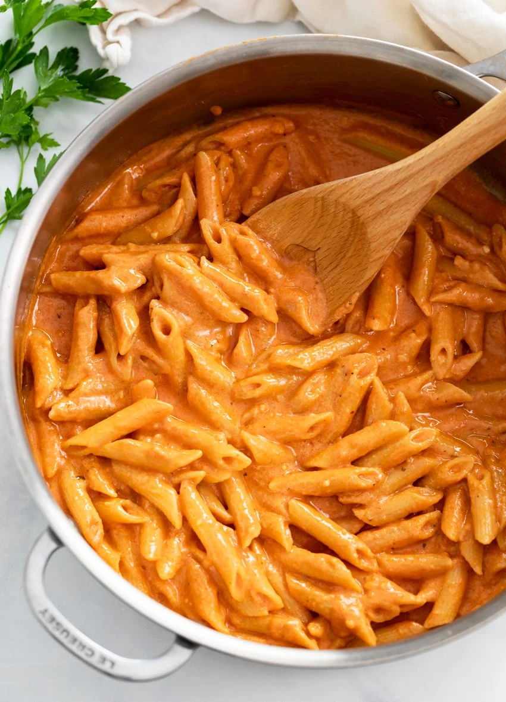

Pink Sauce Pasta

East Pink Sauce Pasta Recipe
Honestly I have no idea what pink sauce pasta is I'm just trying to fill out this assignment.
Ingredients
- 3 tablespoons butter
- 3 cloves garlic
- 2 tablespoons tomato paste
- 8 oz. tomato sauce
- 1 cup half and half
- 1/4 cup chicken broth
- 1 chicken bouillon
- 1 teaspoon honey
- 1 teaspoon hot sauce
- 1/2 cup Parmesan cheese
- 1/2 cup Mozzarella cheese
- 1/2 lb. penne
- 1/2 cup reserved pasta water
Instructions
- Combine the tomato sauce, half and half, chicken broth, chicken bouillon, honey, hot sauce, and seasonings and set aside. Measure out additional ingredients before beginning.
- Begin boiling salted pasta water for the pasta. Once a boil is reached, cook to al dente according to package instructions. (Set a timer to avoid overcooking.) Drain once cooked and reserve ½ cup pasta water. Meanwhile, prepare the sauce.
- Melt the butter in a large skillet over medium heat. Add the garlic and cook for 2 minutes. Stir in the tomato paste and cook for 1 minute.
- Add the combined tomato sauce mixture in splashes, stirring continuously. Bring to a gentle boil, then reduce to a simmer. Let it simmer gently, uncovered, while the pasta cooks
- Gradually sprinkle in the Parmesan and mozzarella cheese over low heat until combined.
- Add the drained pasta and stir to combine. Add a splash of pasta water if you prefer to thin out the sauce slightly. Excess pasta water can be helpful for reheating leftovers as well
- Serve with Garlic Bread with Cheese